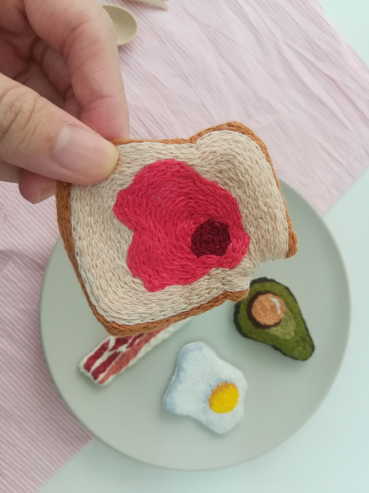

1. Breakfast Series
In this series , i created avocado, bread , bacon and egg , basically all the essential for a breakfast. I missed out coffee!
Year created : 2020
2. Floral bicycle

A present made for mum on her birthday , Tried out different ways to embroider flowers.
Year created : 2019
3. Wording embroidery

Very suitable to be place in living room currently.
Year created : 2020
4. Human Figure


The most satisfied piece up-to-date because i rushed it during assignment week, and it turned out perfect to me.
Year created : 2021
Embedding video
Playlist of a k-drama I watched when I was embroidering last time, so kinda related ?
Biography

Jowen Pang
- A 20-year-old computer science student who kinda passionate in doing embroidery.
- I like to learn anything, provided no exam is needed
- Ms.lefty because I'm a lefty, and I'm very proud of this haha
- Love sports